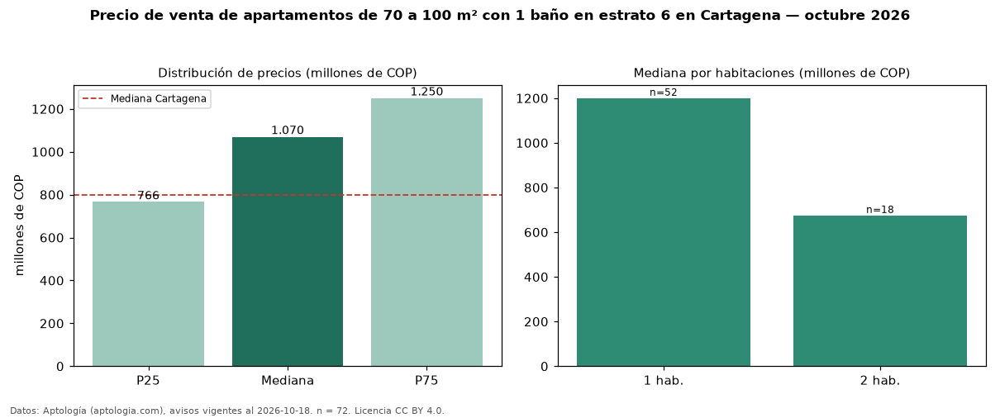

Precio de venta de apartamentos de 70 a 100 m² con 1 baño en estrato 6 en Cartagena — octubre 2026
COP 1,07 mil millones es el precio mediano de apartamentos de 70 a 100 m² con 1 baño en estrato 6 en venta en Cartagena (n = 72 avisos). Frente a la mediana de los apartamentos de 70 a 100 m² en estrato 6 en venta de Cartagena (COP 930 millones, n = 626), queda 15 % por encima; este segmento reúne el 12 % de esos avisos. Por metro cuadrado, la mediana es COP 10,42 millones/m² (n = 47), 4 % por debajo de los apartamentos de 70 a 100 m² en estrato 6 en venta de Cartagena (COP 10,89 millones/m²). El área mediana anunciada es 76 m². El segmento con más oferta es el de 1 habitación (52 avisos, mediana COP 1,20 mil millones); pasar de 1 habitación a 2 habitaciones cambia la mediana −44 %. La administración mediana declarada es COP 800.000 al mes (n = 54). La mediana de todos los apartamentos en venta de Cartagena es COP 800 millones (+34 % de diferencia). La mitad central de los avisos va de COP 766 millones a COP 1,25 mil millones (razón 1,6), una dispersión moderada. Datos: Aptología (aptologia.com), CC BY 4.0 — https://www.aptologia.com/venta/cartagena. Archivos: PDF, CSV con las cifras y gráfica PNG.

| Avisos únicos | 72 |
|---|---|
| Percentil 25 | COP 765.775.000 |
| Mediana | COP 1.070.000.000 |
| Percentil 75 | COP 1.250.000.000 |
| Mediana por m² | COP 10.416.666 |
Fuente: avisos vigentes de portales inmobiliarios recopilados por Aptología, deduplicados (mínimo 30 avisos únicos por celda). Precios pedidos, no cerrados. Fecha: 2026-10-18.